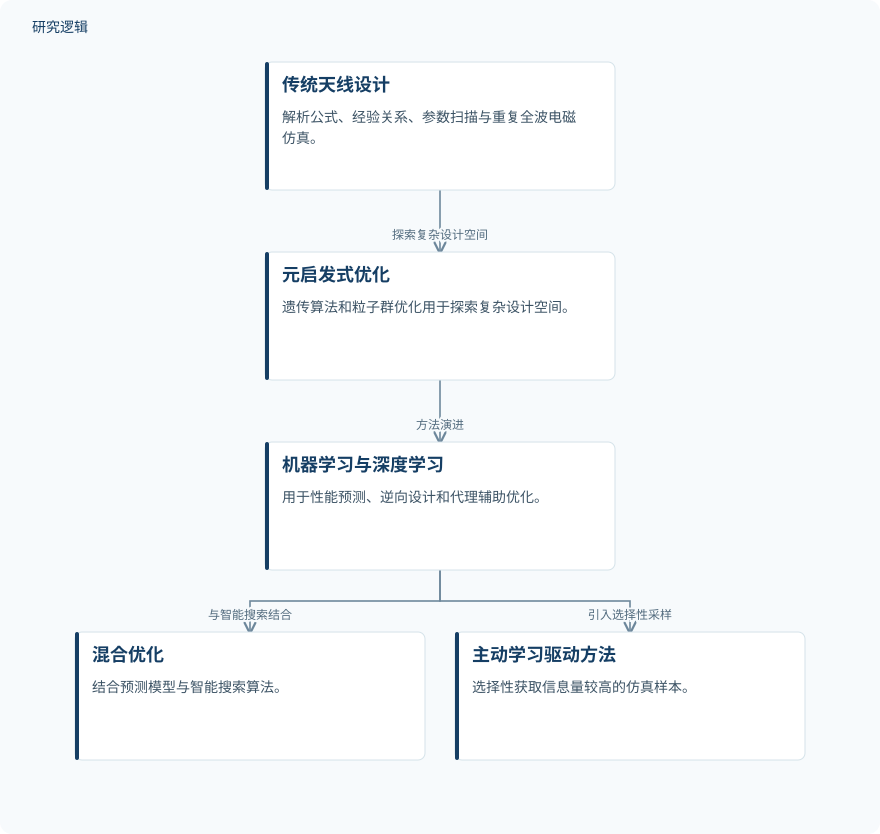

摘要解读
机器学习辅助天线设计与优化：代理建模、主动学习及智能优化综述
Machine Learning-assisted Antenna Design and Optimization: A Comprehensive Review of Surrogate Modeling, Active Learning, and Intelligent Optimization
解读更新 2026-11-10 14:50 · 依据公开摘要整理，未核验全文细节
天线设计变量增多时，反复调用全波电磁仿真会带来较高计算成本。这篇综述围绕代理建模、智能优化与主动学习，梳理如何减少昂贵仿真，同时提醒读者：机器学习的效率收益仍受仿真数据规模与代表性制约。
文章目录
天线需求升级，设计搜索为何越来越贵
无线通信的发展要求天线兼顾紧凑、宽带、高性能及应用适配。传统设计依赖解析公式、经验关系、参数扫描与反复全波电磁仿真；随着设计变量增加，这类流程的计算负担随之加重。
遗传算法（GA）和粒子群优化（PSO）已被广泛研究，用于探索复杂天线设计空间。本文关注的方法演进，则进一步延伸至机器学习、混合优化与主动学习，核心问题是如何更有效地利用昂贵的仿真计算。
以仿真需求和数据依赖审视方法演进
这是一篇综述，而非摘要中报告了新模型实验的研究。作者梳理传统方法、元启发式方法、机器学习方法及其混合与主动学习方案，并从设计策略、优化技术、仿真需求、数据依赖和计算效率等维度审视已有研究。
摘要明确区分了相关方法的作用：机器学习与深度学习用于性能预测、逆向设计和代理辅助优化；混合方法把预测模型与智能搜索算法结合；主动学习则选择性获取信息量较高的仿真样本。
依据摘要整理的天线设计方法演进示意


概括综述涉及的方法及其演进关系，不表示单项实验流程，也不是论文原图。
下载 SVG图示关系说明
实线表示相邻阶段的信息流，虚线表示跨阶段联系或反馈。
传统天线设计 → 元启发式优化：探索复杂设计空间；元启发式优化 → 机器学习与深度学习：方法演进；机器学习与深度学习 → 混合优化：与智能搜索结合；机器学习与深度学习 → 主动学习驱动方法：引入选择性采样
代理预测之外，样本选择同样关键
摘要归纳指出，机器学习方法能够减轻重复电磁仿真的计算负担，但其有效性通常依赖足够大且具有代表性的仿真数据集。因此，不能只关注预测模型，还要关注建立模型所需的数据代价。
综述特别强调代理建模和自适应样本选择在减少昂贵全波仿真中的作用，并指出高维微带天线优化仍需要更自主、数据高效且仿真高效的框架。这是综述提出的需求，不能解读为这些目标已被全面验证。
摘要尚不足以判断效率收益的适用范围
摘要未报告纳入研究的数量、检索与筛选流程、各研究的仿真样本规模，也未提供统一比较条件、定量加速结果或验证范围。因此，仅据当前资料无法判断不同方法的收益是否可直接比较，也无法判断结论覆盖哪些天线配置与设计维度；这不意味着论文正文没有相关内容。
阅读启发：将模型能力与数据代价一起看
阅读启发：对关注逆向设计与结构优化的读者，可以继续追问：代理模型的训练数据代价是否计入效率评价？主动学习如何选择有信息量的样本？不同方法是否在可比的仿真预算下评估？这些问题来自摘要强调的数据依赖与仿真成本，不代表本文已经给出答案。
以上为本站阅读启发与建议，不是论文已验证的结论。